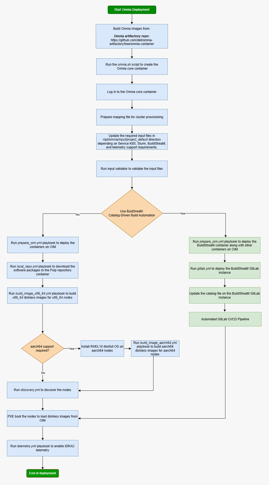

Get Started#

Choose your deployment path based on your cluster requirements, available hardware, and desired workload. Each path is a self-contained, end-to-end tutorial that takes you from a bare set of PowerEdge servers to a fully operational cluster.
Note
Before selecting a path, complete the Prerequisites Checklist to ensure your hardware, networking, and software environment are ready.
Deployment Paths at a Glance#
Path |
Name |
Workload |
Nodes |
Time |
Description |
|---|---|---|---|---|---|
A |
Traditional HPC (Slurm) |
4 |
~2 hrs |
Fastest way to stand up a Slurm cluster. Deploys 1 OIM (management), 1 Slurm head node, 1 compute node, and 1 login node. No Kubernetes or telemetry. Ideal for first-time users and small-scale HPC workloads. |
|
B |
Slurm + Service K8s + Telemetry |
8 |
~4 hrs |
Production-grade deployment with Slurm scheduling, a highly available 3-node Kubernetes service cluster, LDAP/FreeIPA authentication, and full telemetry (iDRAC, Grafana, VictoriaMetrics). Best for teams running mixed HPC/AI workloads with monitoring requirements. |
|
C |
Kubernetes + Telemetry (no Slurm) |
5 |
~2 hrs |
Deploys a 3-control-plane + 1-worker Kubernetes cluster with the complete telemetry pipeline (iDRAC metrics, LDMS, Kafka, VictoriaMetrics, Grafana). No Slurm. Use this when you need infrastructure monitoring without a job scheduler. |
|
D |
BuildStreaM (Catalog-Driven CI/CD) |
8+ |
~6 hrs |
Automated, catalog-driven deployment using GitLab CI/CD pipelines. BuildStreaM reads a declarative catalog to provision and configure the entire cluster. Best for organizations with GitOps workflows or repeated, reproducible deployments at scale. |
Which Path Should I Choose?#
- “I just want Slurm running as fast as possible.”
Start with Slurm Quickstart (Path A). You can always add Kubernetes and telemetry later.
- “I need a production cluster with monitoring and authentication.”
Go with Full Deployment (Path B). This is the canonical Omnia deployment that exercises every major subsystem.
- “I only need telemetry dashboards – no job scheduler.”
Choose K8S Telemetry Only (Path C). This gives you iDRAC-to-Grafana visibility without the overhead of Slurm.
- “I want CI/CD-driven, repeatable infrastructure.”
Use Buildstream Deployment (Path D). BuildStreaM automates the entire lifecycle through GitLab pipelines and a declarative catalog.
Before You Begin#
Every path assumes you have completed the items in Prerequisites Checklist. That page covers:
Supported hardware and firmware versions
OIM (management node) requirements (RAM, OS, Podman, NICs)
Network switch configuration (admin + BMC VLANs)
NFS / storage preparation
BIOS and iDRAC settings on target nodes
Required RHEL subscriptions and Docker credentials
Tip
Print or bookmark the Prerequisites Checklist – it doubles as a day-of-deployment runbook you can hand to a datacenter technician.
Get Started
- Prerequisites Checklist
- Path A: Slurm Quick Start
- Step 1 – Deploy the omnia_core Container
- Step 2 – Create the Mapping File
- Step 3 – Provide Inputs
- Step 4 – Set Credentials
- Step 5 – Prepare the OIM
- Step 6 – Verify OIM Services
- Step 7 – Create Local Repositories
- Step 8 – Build Node Images
- Step 9 – Discover and Provision Nodes
- Step 10 – Deploy Slurm
- Step 11 – Verify the Cluster
- What’s Next?
- Path B: Full Deployment (Slurm + K8s + Telemetry)
- Step 1 – Deploy the omnia_core Container
- Step 2 – Create the Mapping File
- Step 3 – Provide Inputs
- Step 4 – Set Credentials
- Step 5 – Prepare the OIM
- Step 6 – Verify OIM Services
- Step 7 – Set Up Authentication
- Step 8 – Configure Telemetry
- Step 9 – Create Local Repositories
- Step 10 – Set Up Service Kubernetes Cluster
- Step 11 – Build Node Images
- Step 12 – Discover and Provision Nodes
- Step 13 – Deploy Slurm
- Step 14 – Initialize Telemetry
- Step 15 – Verify the Full Deployment
- What’s Next?
- Path C: Kubernetes + Telemetry Only
- Step 1 – Deploy the omnia_core Container
- Step 2 – Create the Mapping File
- Step 3 – Provide Inputs
- Step 4 – Set Credentials
- Step 5 – Prepare the OIM
- Step 6 – Verify OIM Services
- Step 7 – Configure Telemetry
- Step 8 – Create Local Repositories
- Step 9 – Build Node Images
- Step 10 – Discover and Provision Nodes
- Step 11 – Deploy Service Kubernetes Cluster
- Step 12 – Deploy Telemetry
- Step 13 – Verify the Telemetry Pipeline
- What’s Next?
- Path D: BuildStreaM Automated Deployment
- Step 1 – Deploy the omnia_core Container
- Step 2 – Enable BuildStreaM
- Step 3 – Prepare the OIM and Infrastructure
- Step 4 – Deploy GitLab on the Service Cluster
- Step 5 – Create the Cluster Catalog
- Step 6 – Push the Catalog and Trigger the Pipeline
- Step 7 – Verify the Deployment
- Day-2 Operations with BuildStreaM
- What’s Next?
If you have any feedback about Omnia documentation, please reach out at omnia.readme@dell.com.